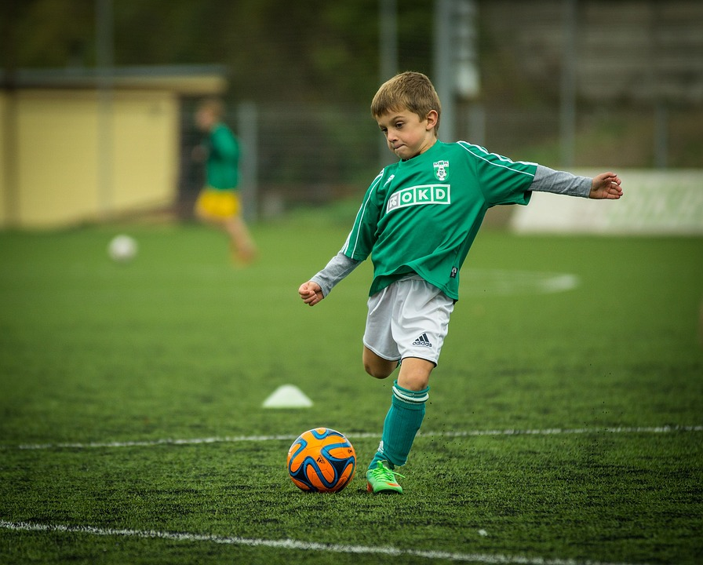
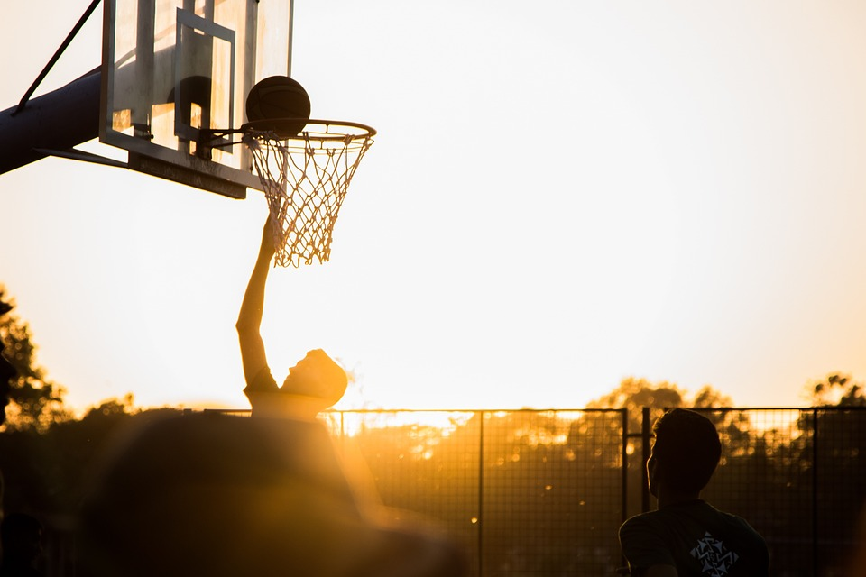
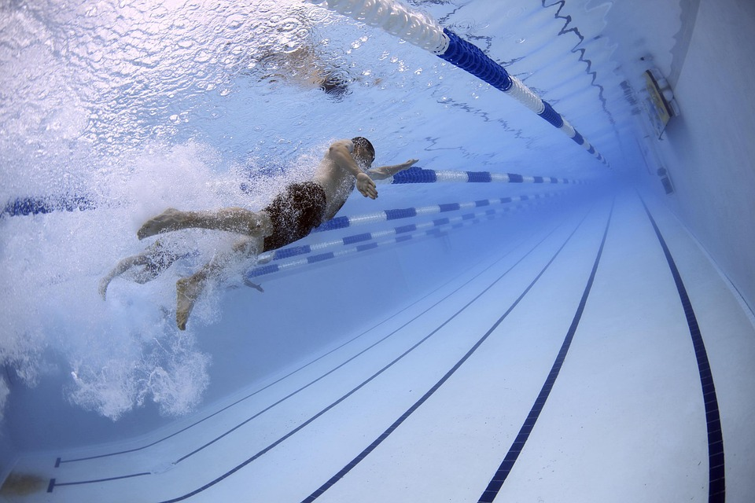
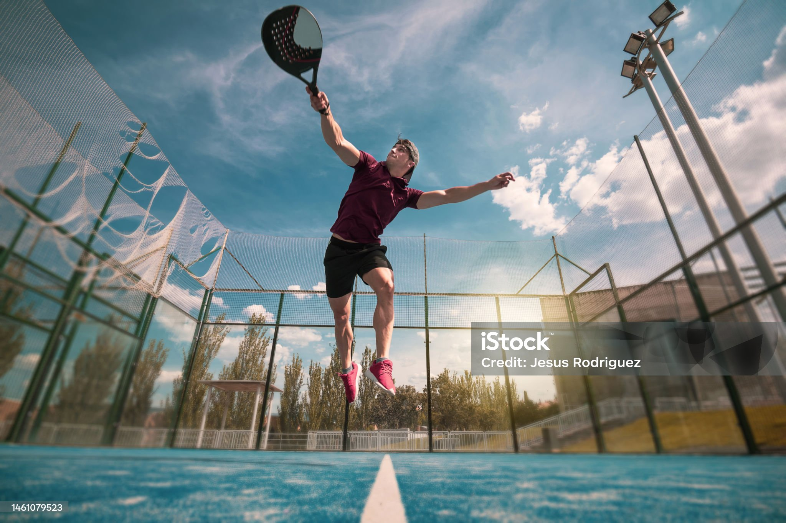
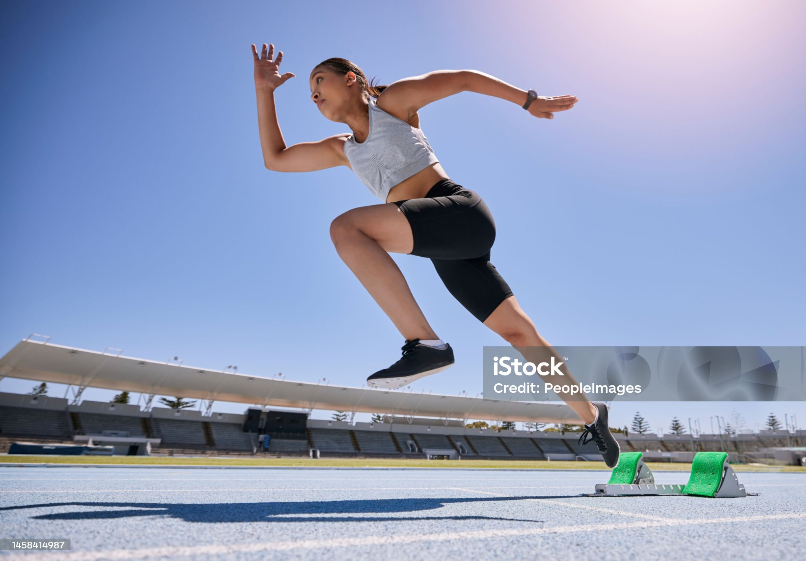
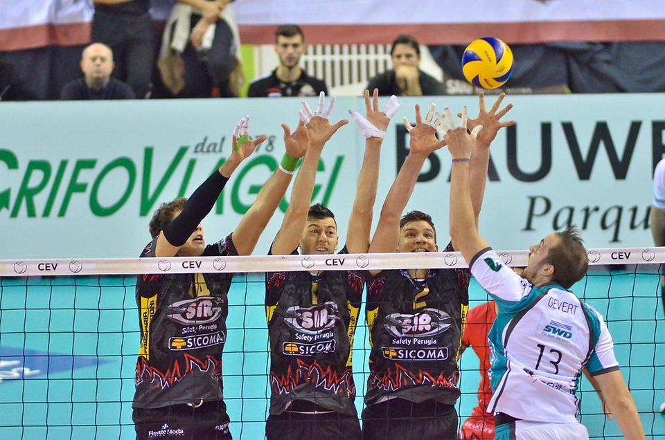

In meiner Woche spiele ich gerne Sport, um aktiv zu bleiben und das Wohlbefinden zu fördern.
FußballFußball, oder Soccer, ist ein weltweit beliebter Sport, der Leidenschaft und Teamarbeit vereint. Spieler zeigen Geschicklichkeit, um Tore zu erzielen, und schaffen eine fesselnde Erfahrung für Fans. |
 |
BasketballBasketball ist ein dynamischer Sport mit Geschwindigkeit und präziser Ballkontrolle. Spieler zeigen Athletik, setzen Taktiken ein und versuchen, Punkte zu erzielen – eine aufregende Kombination aus Strategie und körperlicher Kraft. |
 |
SchwimmenSchwimmen ist eine erfrischende Sportart, die die gesamte Körpermuskulatur stärkt und Ausdauer sowie Atemkapazität verbessert. Schwimmer gleiten elegant durch das Wasser, erleben ein geringes Verletzungsrisiko und genießen die meditative Ruhe des Schwimmens. |
 |
TennisTennis ist ein anspruchsvoller Sport, der Präzision und Ausdauer erfordert, während die Spieler den Ball über das Netz spielen. Es kombiniert körperliche Fitness mit strategischem Denken und bietet eine unterhaltsame Möglichkeit, sich sportlich zu betätigen. |
 |
LaufenLaufen ist nicht nur förderlich für körperliche Fitness, sondern auch für mentale Ausgeglichenheit. Jeder Schritt bedeutet Freiheit, die Natur zu genießen und den Alltagsstress hinter sich zu lassen. |
 |
VolleyballVolleyball ist ein energiegeladener Sport, der Schnelligkeit, Präzision und Teamarbeit erfordert. Spieler setzen gezielte Schläge und präzise Pässe ein, um den Ball über das Netz zu befördern und Punkte zu erzielen. Die fließende Dynamik und die schnellen Ballwechsel machen Volleyball zu einem aufregenden Wettkampf. |
 |